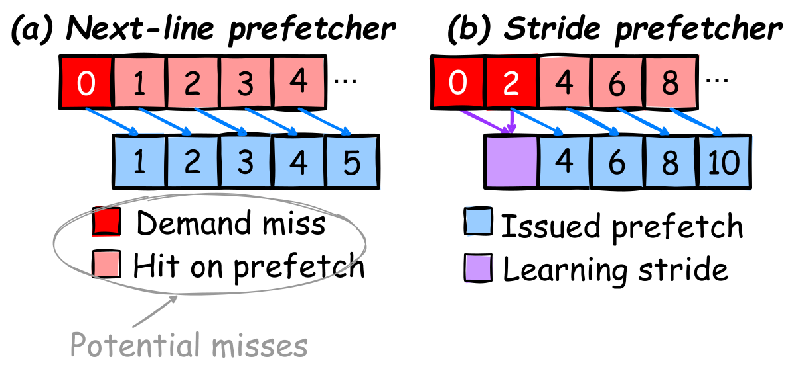
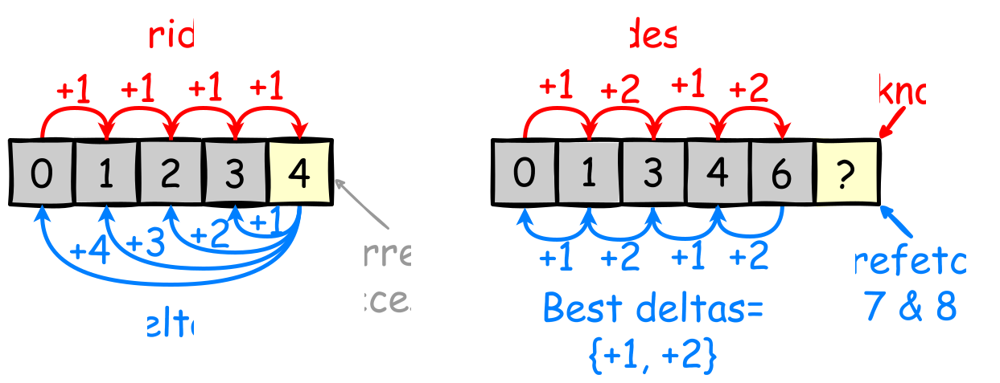
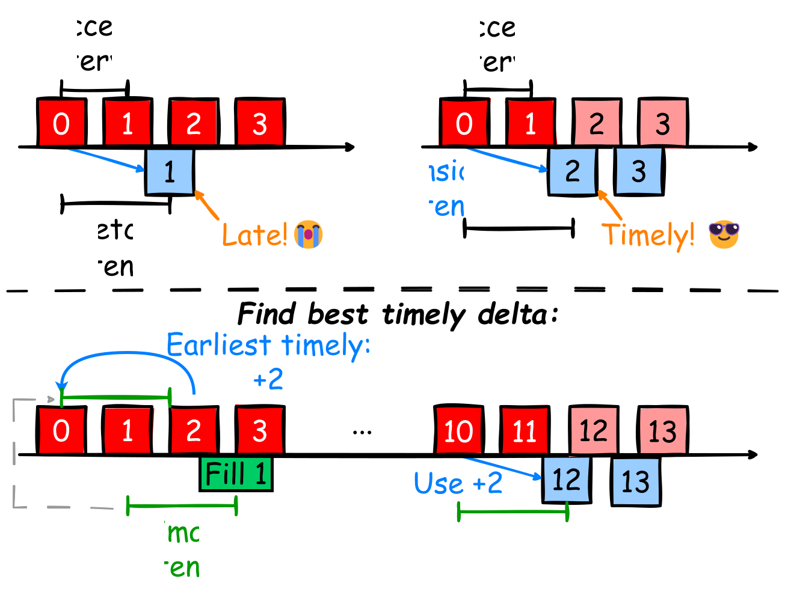

Computer Architecture 2026fall Project 3
By Prof. Jie Zhang
Due: 23:59:00, December 17, 2026
In this project, we will explore the design and evaluation of hardware cache prefetchers in a modern computer system using the ChampSim simulator. First, you will learn how to configure ChampSim's cache hierarchy and integrate prefetchers into specific cache levels (e.g., L1D, L2C, or LLC). You will evaluate how cache parameters and prefetching techniques significantly impact overall system performance.
Part 1 uses two provided synthetic traces to study data cache capacity allocation and mapping conflicts while keeping L1I fixed. Parts 2 and 3 use application traces to evaluate prefetchers on the shared baseline platform.
You are required to read a recent computer architecture paper introducing the Hyperion prefetcher to understand the core principles, architecture, and tradeoffs involved in prefetcher design. You will write a summary of the paper and, based on these insights, design and implement your own prefetcher in ChampSim using Hyperion or other prediction techniques as inspiration; reproducing Hyperion is not required. In Part 3, you will evaluate your prefetcher’s performance and compare it against baseline prefetchers across the provided workload traces.
Part 4 applies cache knowledge to software: optimize a provided telemetry analysis program while preserving its four-stage calculation and complete output. Use the shared hardware with the L1D prefetcher fixed to next_line, and compare complete-task simulation cycles. Experimental design and analysis account for most Part 4 points.
Whenever you encounter issues or have questions regarding this project, please feel free to contact the TAs via WeChat or email. All instructions and scripts have been verified on Ubuntu 20.04.1 LTS (Linux Kernel 5.15.0) and Ubuntu 22.04.2 LTS (Linux Kernel 5.19.0).
Part 1: Data Cache Capacity Allocation and Associativity
Explore how data cache capacity, set mapping, associativity, and access latency affect performance in ChampSim. Keep the instruction cache (L1I) unchanged and organize L1D and L2C under an exact capacity budget. Your goal is to find the best configuration among those you test, and explain its performance using cache statistics and configured latencies.
Use the course ChampSim environment from Project 1.
1. Prepare the Workloads
Part 1 uses two synthetic teaching traces:
| Trace | Required experiment | Purpose |
|---|---|---|
| cache-capacity.champsimtrace.xz | Capacity allocation | Reuse hot data while traversing a larger working set; investigate capacity and latency tradeoffs. |
| cache-conflict.champsimtrace.xz | Sets and associativity | Repeatedly access blocks with matching page offsets; investigate mapping conflicts at fixed capacity. |
Download both course-provided trace files from the PKU Disk into the ChampSim traces/ directory. Each contains 124M instructions, enough for the required 20M warmup followed by 100M measurement.
Keep the provided trace contents and simulation window identical across configurations.
2. Single-Core Baseline
Create lab3_config.json with this complete baseline configuration. Use it as the starting point for each experiment.
{
"executable_name": "champsim_proj3_baseline",
"num_cores": 1,
"ooo_cpu": [
{
"frequency": 4000,
"rob_size": 352,
"branch_predictor": "bimodal",
"btb": "basic_btb",
"mispredict_penalty": 15
}
],
"L1I": {
"sets": 64,
"ways": 8,
"mshr_size": 16,
"max_tag_check": 1,
"max_fill": 1,
"prefetcher": "no",
"replacement": "lru"
},
"L1D": {
"sets": 64,
"ways": 12,
"mshr_size": 16,
"max_tag_check": 1,
"max_fill": 1,
"prefetcher": "no",
"replacement": "lru"
},
"L2C": {
"sets": 2048,
"ways": 16,
"mshr_size": 20,
"max_tag_check": 4,
"max_fill": 4,
"prefetcher": "no",
"replacement": "lru",
"lower_level": "DRAM"
},
"physical_memory": {
"name": "DRAM"
}
}
The data path is L1I/L1D → L2C → DRAM. Other unspecified parameters use the course version's defaults.
Exact Capacity Budget
With 64 B cache lines:
- L1I: , fixed throughout.
- L1D: .
- L2C: .
- Total: .
Here, . The budget counts data capacity, excluding tags and metadata. Every tested configuration must satisfy:
Controlled Parameters and Latencies
Only change L1D/L2C sets and ways as allowed by each experiment. Keep all L1I settings, the CPU, block size, MSHRs, queue sizes, tag/fill bandwidths, replacement policies, prefetchers, address translation, and DRAM settings unchanged. The explicit max_tag_check and max_fill values prevent bandwidth from changing automatically when sets change. You may change executable_name to distinguish binaries.
Do not override cache latency, hit_latency, or fill_latency. Let the course version compute them from the cache organization, and record the resulting hit/fill latencies for every configuration. The default calculation is in inc/cache_builder.h; for the baseline it gives L1D hit/fill 2/3 cycles and L2C 8/9 cycles.
Build and Run
./config.sh lab3_config.json
make -j $(nproc)
mkdir -p results
Run the baseline on both traces from the ChampSim root:
./bin/champsim_proj3_baseline --json results/baseline_capacity.json --warmup-instructions 20000000 --simulation-instructions 100000000 traces/cache-capacity.champsimtrace.xz > results/baseline_capacity.txt
./bin/champsim_proj3_baseline --json results/baseline_conflict.json --warmup-instructions 20000000 --simulation-instructions 100000000 traces/cache-conflict.champsimtrace.xz > results/baseline_conflict.txt
All final comparisons must use 20M warmup + 100M measurement. Check that the run completes and the final CPU statistics include at least 100M measured instructions.
For each modified configuration, you can save a separate JSON and use a distinct executable name. You can then re-run config.sh and make, run the corresponding binary, and save its stdout and JSON statistics under distinct result names.
3. Capacity Allocation Experiment
Use cache-capacity.champsimtrace.xz. Compare at least three L1D/L2C capacity allocations under the exact budget. Keep L1I fixed. The following configurations are valid starting points:
| Configuration | L1D sets | L1D ways | L1D KiB | L2C sets | L2C ways | L2C KiB | L1D + L2C KiB |
|---|---|---|---|---|---|---|---|
| A: Baseline | 64 | 12 | 48 | 2048 | 16 | 2048 | 2096 |
| B | 256 | 11 | 176 | 2048 | 15 | 1920 | 2096 |
| C | 256 | 27 | 432 | 2048 | 13 | 1664 | 2096 |
You may test additional valid configurations and refine your choices based on measurements. Under this exact budget, ways may need to change along with capacity. Explain these coupled changes.
Address the following questions:
- Which tested allocation achieves the highest IPC, and what supports that conclusion?
- How do the hot working set and reuse pattern explain L1D misses and L2C accesses?
- Does a lower miss rate always produce higher IPC? Account for the configured latencies.
- Is there evidence that L2C capacity is insufficient?
4. Sets and Associativity Experiment
Use cache-conflict.champsimtrace.xz. Keep L1D capacity at 48 KiB, L2C at the full baseline configuration, and L1I unchanged. Compare at least three L1D organizations:
| L1D sets | L1D ways | L1D capacity |
|---|---|---|
| 128 | 6 | 48 KiB |
| 64 | 12 | 48 KiB |
| 32 | 24 | 48 KiB |
The set/way product must remain constant. Changing sets also changes address mapping; changing ways may change the default latency. Analyze both effects.
Address the following questions:
- How can a working set smaller than the cache still cause frequent misses?
- Which address bits select a set, and how do the trace's page offsets affect mapping?
- Does increasing ways always improve performance when sets decrease at the same time?
- Which comparison most clearly isolates mapping conflicts from latency changes?
Use workload structure, warmup, and measured counters to support a conflict-miss explanation. Ordinary miss counters do not directly classify misses as compulsory, capacity, or conflict misses.
5. Measurements, Analysis, and Deliverables
Use the final Region of Interest Statistics, excluding warmup. For these load-based traces, consistently use the LOAD rows of CPU 0's L1D and L2C:
| Metric | Definition |
|---|---|
| IPC | Measured retired instructions / measured CPU cycles |
| Total cycles | CPU cycles from the same measurement window |
| Local LOAD miss rate | Cache LOAD MISS / cache LOAD ACCESS |
| LOAD MPKI | 1000 × cache LOAD MISS / measured retired instructions |
Also retain LOAD ACCESS, MISS, and MISS_MERGE counts, and record cache sets, ways, capacities, MSHRs, and configured hit/fill latencies. Keep MISS and MISS_MERGE separate. L2C only sees requests that missed in L1D. Its local miss rate can rise simply because fewer requests reach it, so always read the rate together with the access count and MPKI.
If a cache has zero LOAD accesses, report its miss rate as N/A. If the text output does not list a cache at all, check the JSON: zero counters mean the cache was never accessed, while missing fields mean the run did not finish or the output is incomplete.
Submit the following in your report and source archive:
- Reproducible configurations: The baseline and every tested variant JSON, course ChampSim revision, build/run commands, and successful build/run evidence.
- Capacity allocation results: At least three allocations on
cache-capacity, with IPC, cycles, L1D/L2C LOAD counts, miss rates, MPKI, and configured hit/fill latencies. Explain the best tested allocation using the measurements. - Associativity results: At least three fixed-capacity L1D organizations on
cache-conflict, with the same metrics. Explain the observed mapping conflicts and latency effects. - Raw evidence: Original stdout and JSON statistics, plus the result tables in CSV form. Discuss unchanged or degraded performance when observed; an improvement is not required for every modification.
At minimum, run six simulations: three allocations on cache-capacity and three organizations on cache-conflict. The baseline must be run separately on each trace.
Part 2: Run Simulation with Prefetchers
ChampSim provides multiple classic cache prefetchers out of the box (located in the prefetcher/ directory). In ChampSim, prefetchers are assigned to a specific cache level (such as L1D, L2C, or LLC) directly in the JSON configuration file via the "prefetcher" key.
Shared Evaluation Platform (Parts 2–4)
Prefetcher comparisons in Parts 2 and 3, including leaderboard evaluation, use the platform below. Part 4 uses the same hardware with L1D next_line fixed for program optimization. Use the baseline capacities from Part 1, not your optimized Part 1 configuration.
| Parameter | Fixed setting |
|---|---|
| Cores | 1; preserve the complete Part 1 baseline CPU configuration |
| Cache hierarchy | Split L1I/L1D → unified L2C → DRAM; no LLC in the access path |
| Cache line size | 64 B |
| L1I | 64 sets × 8 ways = 32 KiB; 16 MSHRs; LRU; no prefetcher |
| L1D | 64 sets × 12 ways = 48 KiB; 16 MSHRs; LRU |
| L2C | 2048 sets × 16 ways = 2048 KiB; 20 MSHRs; LRU; no prefetcher |
| Cache latencies | ChampSim's default calculation; no manual overrides |
| Tag/fill bandwidths | Preserve the Part 1 baseline: L1I 1/1, L1D 1/1, L2C 4/4 |
| Other settings | Preserve the Part 1 baseline; remaining parameters use course defaults |
Use the same course-provided ChampSim version and base configuration for every run. Only the L1D prefetcher module and its internal predictor parameters may differ between prefetcher experiments. Do not modify the core, cache geometry, cache timing, replacement policies, memory system, or baseline prefetcher implementations for the comparison.
Starting from the complete baseline JSON in Part 1, update the fields below in lab3_config.json. Preserve its CPU settings and all other baseline fields. Keep the default L1-to-L2 connections. The explicit lower_level: DRAM on L2C removes the LLC that ChampSim would otherwise insert between L2C and DRAM.
{
"executable_name": "champsim_ip_stride",
"num_cores": 1,
"L1I": {
"sets": 64,
"ways": 8,
"mshr_size": 16,
"max_tag_check": 1,
"max_fill": 1,
"prefetcher": "no",
"replacement": "lru"
},
"L1D": {
"sets": 64,
"ways": 12,
"mshr_size": 16,
"max_tag_check": 1,
"max_fill": 1,
"prefetcher": "ip_stride",
"replacement": "lru"
},
"L2C": {
"sets": 2048,
"ways": 16,
"mshr_size": 20,
"max_tag_check": 4,
"max_fill": 4,
"prefetcher": "no",
"replacement": "lru",
"lower_level": "DRAM"
},
"physical_memory": {
"name": "DRAM"
}
}
For no, next_line, or your own prefetcher, change only L1D.prefetcher and executable_name. Submit the configurations used, the ChampSim revision, and the simulation commands so the results can be reproduced.
Note: ChampSim compiles the prefetcher into the binary, so after changing the prefetcher module you must re-run
./config.shandmake:./config.sh lab3_config.json make -j $(nproc)Tip: You can set different
"executable_name"values in your JSON file (e.g.,"champsim_no_pf","champsim_next_line","champsim_ip_stride") to build distinct binary executables for different configurations without overwriting them.
In this part, we will explore three L1D prefetcher configurations (The L1I and L2C settings remain unchanged):
"no": Disables prefetching for baseline comparison."next_line": A simple prefetcher that fetches the contiguous next cache block on access."ip_stride": An Instruction Pointer (IP) based stride prefetcher that tracks strided memory access patterns per instruction.
ip_stride is attached to L1D. The Accuracy and Coverage metrics below use L1D counters only. Interpret these local metrics together with IPC and Speedup.
Running the Simulations
Let's evaluate how these prefetchers impact system performance on two prefetch-sensitive workloads: shell_sort and gemm.
To run a simulation for a specific prefetcher binary, execute:
# Example: Running ip_stride prefetcher on shell_sort and gemm
mkdir -p results
./bin/champsim_ip_stride --warmup-instructions 20000000 --simulation-instructions 100000000 traces/shell_sort.champsimtrace.xz > results/ip_stride_sort.txt
./bin/champsim_ip_stride --warmup-instructions 20000000 --simulation-instructions 100000000 traces/gemm.champsimtrace.xz > results/ip_stride_gemm.txt
Repeat this process for the binaries compiled with "no" and "next_line".
Hardware prefetchers rely on observing memory access patterns over time to train internal state tables. Setting the simulation or warmup instructions too low will result in inaccurate prefetcher accuracy and coverage statistics.
For final evaluations in Parts 2 and 3, use --warmup-instructions 20000000 (20M) and --simulation-instructions 100000000 (100M) on the same trace files and starting positions for every prefetcher. Collect statistics from the simulation phase only. You may use smaller instruction counts for debugging. Part 4 measures its complete analysis-function ROI with zero warmup and each implementation's own instruction length on the same hardware; see Part 4.
Analyzing Statistics
Extract these counters from CPU 0 and L1D in the course version's statistics output, and keep the original logs:
| Field | Meaning |
|---|---|
instructions | Instructions retired by CPU 0 during measurement |
cycles | Cycles used by CPU 0 during measurement |
issued | L1D prefetch requests that the cache accepted and sent out |
useful | Prefetch requests that actually helped (see below) |
demand_misses | Real LOAD and RFO accesses that missed in L1D |
What useful counts. A prefetch is useful when its data is consumed before it is thrown away. The simulator's L1D counter adds one in two cases: an access hits a line that is still marked as prefetched, or a demand request arrives while the prefetch is still in flight and merges with it. In the second case, both useful and demand_misses can increase for the same access.
What demand_misses counts. Count miss events on real LOAD and RFO accesses only. Do not include prefetch requests, writes/writebacks or translations. A demand access that merges with an outstanding prefetch still counts as a miss in the simulator, so keep it: do not remove duplicates by address. Use the same counting rule for every run.
Report four metrics:
- IPC: .
- Accuracy: .
- Coverage estimate: .
- Speedup: , using the same workload, platform and instruction window. The
nobaseline has Speedup 1.
What Accuracy and Coverage tell you. Accuracy answers one question: of the prefetches the cache sent out, how many paid off? Coverage estimate answers another: compared with the demand misses that remain, how much traffic did prefetching cover? The second number is only an estimate. The simulator's useful count can also include consumption by writes, while demand_misses counts only LOAD and RFO, and a merged access can appear in both. So it is not an exact fraction of the misses that prefetching removed. Prefetching also changes cache pollution and execution timing. Read Accuracy and Coverage together with IPC and Speedup, never on their own.
If a denominator is zero, report N/A. For the no run, always report Accuracy and Coverage as N/A, but keep its zero issued and useful counters. Do not measure or submit a late-prefetch count.
Reproducible Metric Calculation
Students are responsible for extracting and checking their own simulation counters and calculating the metrics. Record the counters in a CSV with exactly these columns, one row per workload/prefetcher pair:
workload,prefetcher,instructions,cycles,issued,useful,demand_misses
Include a no row for every workload. Keep raw counters as integers and ratios as fractions (or label percentages explicitly in figures). Students must extract the counters and calculate IPC, Accuracy, Coverage, and Speedup themselves using the formulas above. Explain the mapping from simulator output fields to your raw counters.
For the prefetcher comparisons in Parts 2 and 3, check that each run completes, has valid counters, and includes at least 100M measurement instructions. Use the same platform and instruction window, include the matching no baseline, and apply the zero-denominator rules above. Submit raw_counters.csv, your calculated results in metrics.csv, the configurations, and the original logs.
Please run two prefetch-sensitive workloads (shell_sort.champsimtrace.xz and gemm.champsimtrace.xz) across the three prefetcher configurations. The remaining workloads (spfa and binary_search) are prefetch-insensitive and optional.
Include figures or tables in your report presenting the four critical metrics (IPC, Accuracy, Coverage estimate, and Speedup) across all six test cases:
- Prefetchers:
no(No prefetcher),next_line,ip_stride. - Workloads:
shell_sort.champsimtrace.xz,gemm.champsimtrace.xz. - Cache Hierarchy: Use the fixed shared evaluation platform above, attaching prefetchers to
L1D.
In total, you will run 6 simulation runs (3 prefetcher configurations 2 workloads).
Part 3: Paper Reading, Prefetcher Design, Implementation, and Evaluation
In this part, you will first read a state-of-the-art research paper on hardware prefetching and analyze its design principles. Based on the paper and your understanding of memory access prediction, you will then design and implement your own hardware prefetcher in ChampSim. Finally, you will evaluate your prefetcher performance and participate in a competitive benchmark ranking.
Task 1: Paper Reading and Summary
Cui, Y., Chen, W., Cheng, X., & Yi, J. (2024). Hyperion: A Highly Effective Page and PC Based Delta Prefetcher. ACM Transactions on Architecture and Code Optimization (TACO).
You are required to read the paper above and write a concise summary. The goal of this task is to understand the design principles of modern hardware prefetchers and use them as inspiration for your own prefetcher design.
Your summary should cover:
-
Background: What challenges do modern processors face when predicting future memory accesses? What limitations exist in traditional spatial, stride, or delta-based prefetchers?
-
Core Design & Mechanisms: How does Hyperion leverage Page information and Instruction Pointer (PC) information to track memory access patterns? Explain its key tables, metadata structures, delta tracking mechanisms, and prefetch generation strategy.
-
Design Insights: Identify the key ideas from Hyperion that can be applied to designing a new prefetcher. Discuss possible improvements, extensions, or alternative designs.
(Note: This is a custom prefetcher design task; reproducing Hyperion is not required. The purpose of this task is to understand the paper and derive your own prefetcher design.)
Task 2: Designing and Implementing Your Own Prefetcher in ChampSim
ChampSim exposes cache events through C++ prefetcher module callbacks.
In this task, you will design and implement your own prefetcher based on the ideas learned from the reference paper. Your design should include a prediction mechanism, metadata tracking structures, and a prefetch generation strategy.
Your prefetcher may be inspired by Hyperion or other existing prefetching techniques, such as:
- PC-based stride prefetching
- Delta correlation prefetching
- Page-based spatial prefetching
- Region-based prefetching
- Hybrid prefetching combining multiple predictors
- Any novel prefetching strategy designed by yourself
Use the Course Module Skeleton
The course repository already provides prefetcher/my_prefetcher/my_prefetcher.h and prefetcher/my_prefetcher/my_prefetcher.cc. Extend these files and complete their TODOs. Keep the declarations and definitions consistent with the course version; both callbacks must return a uint32_t value on every path.
The following two-file example uses the existing class and callback signatures. It emits a minimal same-page next-line request to demonstrate the interface. Replace its prediction logic with your own design.
prefetcher/my_prefetcher/my_prefetcher.h:
#ifndef PREFETCHER_MY_PREFETCHER_H
#define PREFETCHER_MY_PREFETCHER_H
#include <cstdint>
#include "champsim.h"
#include "modules.h"
class my_prefetcher : public champsim::modules::prefetcher
{
public:
using prefetcher::prefetcher;
uint32_t prefetcher_cache_operate(
champsim::address addr, champsim::address ip, uint8_t cache_hit,
bool useful_prefetch, access_type type, uint32_t metadata_in);
uint32_t prefetcher_cache_fill(
champsim::address addr, long set, long way, uint8_t prefetch,
champsim::address evicted_addr, uint32_t metadata_in);
// Optional: declare a callback here before defining it in the .cc file.
// void prefetcher_initialize();
// void prefetcher_cycle_operate();
// void prefetcher_final_stats();
};
#endif
prefetcher/my_prefetcher/my_prefetcher.cc:
#include "my_prefetcher.h"
#include "cache.h"
uint32_t my_prefetcher::prefetcher_cache_operate(
champsim::address addr, champsim::address ip, uint8_t cache_hit,
bool useful_prefetch, access_type type, uint32_t metadata_in)
{
if (type == access_type::LOAD) {
const champsim::block_number block{addr};
const champsim::address pf_addr{block + 1};
if (champsim::page_number{pf_addr} == champsim::page_number{addr}) {
const bool accepted = prefetch_line(pf_addr, true, metadata_in);
// If tracking requests, record the timestamp only when accepted.
// TODO: replace this example with your predictor and tracking logic.
(void)accepted;
}
}
return metadata_in;
}
uint32_t my_prefetcher::prefetcher_cache_fill(
champsim::address addr, long set, long way, uint8_t prefetch,
champsim::address evicted_addr, uint32_t metadata_in)
{
if (way == intern_->NUM_WAY) {
// Bypass: no cache way receives this fill.
return metadata_in;
}
// TODO: update your predictor's fill/eviction state if needed.
return metadata_in;
}
Store prediction tables, confidence values, and request history as members of my_prefetcher. Add the corresponding container headers or msl/lru_table.h when your design uses them.
Course ChampSim API
prefetcher_cache_operate()receives typed addresses, the PC, hit status,useful_prefetch, access type, and metadata. In the provided header,cache_hitisuint8_t; zero means miss and nonzero means hit. Returnmetadata_inwhen your design does not modify metadata.- Activation: the cache calls your callback only for access types in its
prefetch_activatemask, and never for requests generated by the cache's own prefetcher. In the shared platform, L1D calls it on LOAD and PREFETCH, not on WRITE or RFO tag checks. Keep these platform settings unchanged. addrandiparechampsim::address, not integer block indices. In the shared L1D baseline,addris a physical data address;ipidentifies the initiating instruction. Data addresses may contain byte-offset bits, so normalize them consistently for history and fill lookups. A request without an initiating demand PC can have a zeroip.useful_prefetchis true only when an access hits a line brought in by a prefetch. The simulator's USEFUL counter also counts demand requests that merge with an in-flight prefetch, so the two are not identical; see Part 2.typeis the scopedaccess_typeenum. Compare it with values such asaccess_type::LOAD,access_type::RFO, oraccess_type::PREFETCH.prefetcher_cache_fill()reports the fill address,longset/way indices, auint8_tprefetch flag, evicted address, and metadata. A nonzero prefetch flag identifies a prefetch fill as reported by the simulator. A bypass hasway == intern_->NUM_WAYand a default-constructed evicted address; do not index per-way state for a bypass. Return the metadata to associate with the filled line.intern_points to the attached cache. Includecache.hin the implementation when accessing fields or methods such asintern_->NUM_WAYorintern_->get_mshr_occupancy_ratio().prefetch_line(pf_addr, fill_this_level, metadata)takes a typed byte address and a boolean fill choice.truefills the attached cache (L1D here);falseforwards the request through the lower hierarchy without filling L1D. The boolean is not a cache-level number. The return value only says the request entered the prefetch interface's queue; it does not guarantee a memory transaction or a later fill callback. Handle rejection when maintaining request state or implementing retries.- Optional callbacks:
prefetcher_initialize()runs once during initialization;prefetcher_cycle_operate()runs once per attached-cache operate tick, after its main tag/fill work;prefetcher_final_stats()can print custom statistics. Declare and define any optional callback you use. The branch callback belongs to instruction-prefetcher use and is not needed for this L1D task.
Use the typed address helpers instead of passing a shifted integer as a byte address:
const champsim::block_number block{addr};
const champsim::page_number page{addr};
const uint64_t block_key = block.to<uint64_t>();
const uint64_t page_key = page.to<uint64_t>();
const uint64_t block_in_page =
champsim::page_offset{addr}.to<uint64_t>() / BLOCK_SIZE;
const champsim::address line_addr{block};
const champsim::address next_line_addr{block + 1};
block_key and page_key are integer indices suitable for table keys; line_addr and next_line_addr are typed byte addresses suitable for prefetch_line(). Apply the same block normalization in operate and fill callbacks.
Use intern_->current_time as your only clock source. It is available in both operate and fill callbacks, shares the cache's timebase, and needs no extra state. Record it on every event and convert elapsed time to local cache cycles with intern_->clock_period:
const auto request_time = intern_->current_time;
// Store request_time in a module-owned table; retrieve it on the later event.
const auto elapsed_cycles =
(intern_->current_time - request_time) / intern_->clock_period;
Do not use access counts, host wall-clock time, or a second timestamp source. Keep predictor tables and timing state continuous across the warmup/measurement boundary; ChampSim resets its native measurement counters itself. Track rejected requests, repeated accesses, fills, and stale entries consistently.
Build and Run Your Module
- Complete the existing
my_prefetcher.handmy_prefetcher.ccfiles. - Start from the Part 2 shared baseline, change only
L1D.prefetcherto"my_prefetcher", and setexecutable_nameto"champsim_my_prefetcher". - Generate the build and compile:
./config.sh lab3_config.json
make -j $(nproc)
- Run your module on the two required workloads:
mkdir -p results
./bin/champsim_my_prefetcher --warmup-instructions 20000000 --simulation-instructions 100000000 traces/shell_sort.champsimtrace.xz > results/my_prefetcher_sort.txt
./bin/champsim_my_prefetcher --warmup-instructions 20000000 --simulation-instructions 100000000 traces/gemm.champsimtrace.xz > results/my_prefetcher_gemm.txt
Shorter runs are allowed for debugging. Use the full window above for final results and calculate the metrics yourself using Part 2's formulas.
Evaluation and Grading Criteria
Your prefetcher implementation will be evaluated using a suite of ChampSim trace workloads (including both prefetch-sensitive and undisclosed hidden benchmarks).
All baseline and custom prefetchers must run on the shared evaluation platform defined in Part 2, with 20M warmup instructions followed by 100M simulation instructions per trace. Attach your prefetcher only to L1D. Do not use your optimized Part 1 cache configuration. The same fixed platform and instruction window apply to hidden benchmarks and leaderboard runs.
Extract the counters and calculate the metrics yourself using the definitions, formulas, and zero-denominator rules in Part 2. Submit raw logs, counter CSV files, and calculated results for baseline and custom prefetchers.
Reuse Part 2 Baselines
You may reuse the six Part 2 baseline results (no, next_line, and ip_stride on both workloads) when they use the same simulator revision, baseline implementations, CPU/cache/memory configuration, trace files and starting positions, and 20M warmup + 100M measurement window. Identify the reused runs and include their original configurations, logs, counters, and calculated results. If these conditions differ, rerun the affected baselines.
With matching Part 2 results, Part 3 requires only two additional final simulations: your custom prefetcher on shell_sort and on gemm. The final comparison contains eight cases (four prefetchers × two workloads), with six cases reused and two newly measured. Additional debugging, tuning, or ablation runs are optional.
Local Performance Evaluation Script
Download lab3-auto-run.py, place it in the course ChampSim root directory, and run it after implementing prefetcher/my_prefetcher/my_prefetcher.h and .cc:
python3 lab3-auto-run.py --max-worker 2 --output-file local-result.json
The script follows the Project 2 runner workflow: build each prefetcher once, run traces in parallel, and cache the baseline. It uses L1D next_line as the baseline and my_prefetcher as the candidate, with the shared Part 2 platform and 20M warmup + 100M measurement on 16 equally weighted traces: shell_sort, gemm, and the following CACHE_TRACES.
cache-10.champsimtrace.xz
cache-11-1.champsimtrace.xz
cache-11-2.champsimtrace.xz
cache-1.champsimtrace.xz
cache-2.champsimtrace.xz
cache-3.champsimtrace.xz
cache-4.champsimtrace.xz
cache-5.champsimtrace.xz
cache-6.champsimtrace.xz
cache-7.champsimtrace.xz
cache-8.champsimtrace.xz
cache-9.champsimtrace.xz
603.bwaves_s-1080B.champsimtrace.xz
654.roms_s-1021B.champsimtrace.xz
It reads lab3_config.json when present, fills omitted platform fields with the shared baseline, and rejects hardware changes that would make the comparison inconsistent. The input configuration is not modified.
For the geometric mean speedup G defined below, the script reports score = 100 × G. Matching next_line gives 100; a geometric mean speedup of 1.10 gives 110. Successful stdout contains only a JSON score; progress goes to stderr. Detailed results include each trace's IPC, retired instructions, cycles, and speedup, using ChampSim's native JSON ROI counters.
The first default invocation runs 16 baseline and 16 candidate simulations (32 total). Later invocations reuse valid baseline/next_line/ entries and run only the 16 candidate simulations. The cache checks the platform, instruction window, trace contents, and baseline/framework sources; editing your candidate module does not invalidate it. Logs, generated configurations, native statistics, and detailed results are saved under .auto-run-p3/run-*/. Failed or incomplete simulations produce no score.
Part 2 baseline reuse for the report remains available as described above. The script maintains its own validated cache and does not import manual logs. It computes the IPC performance score only; extract counters and calculate Accuracy and Coverage yourself using Part 2's formulas. A local score of 100 or higher meets the absolute performance requirement.
For a short workflow check, use the following command. These results do not replace the final measurement window:
python3 lab3-auto-run.py --warmup-instructions 200000 --simulation-instructions 1000000
Use --candidate NAME to select another prefetcher module and --build-jobs N to limit compilation concurrency. The optional --trace FILENAME flag can be repeated to replace the default automatic scoring suite with a selected subset or a separate suite. Without this flag, all 16 traces above contribute to the score.
Grading Structure
Part 3 contributes 11 points: 5 points for the paper summary and 6 points for design, implementation, and performance. The 6 points count toward the 18-point experimental component of the project.
-
Paper Summary (5 pts): Background and motivation: 1 pt; core architecture and prediction mechanisms: 3 pts; design insights: 1 pt.
-
Prefetcher Design & Implementation (2 pts): Students should provide:
- Description of their prefetcher design.
- Motivation behind the design choices.
- Explanation of prediction mechanisms and metadata structures.
- Correct implementation in ChampSim.
- Analysis of IPC, accuracy, coverage estimate, and speedup.
-
Performance Evaluation (4 pts):
-
Absolute Performance (2 pts): Obtain
score >= 100with the locallab3-auto-run.pyto earn the full 2 points. -
Relative Ranking (up to 2 pts): Students will be ranked based on the geometric mean IPC speedup relative to
next_lineacross all evaluation traces:Each trace has equal weight. Run
next_lineand your custom prefetcher on the same platform and instruction window for each trace. This ranking metric usesnext_lineas its reference; the general-purpose Speedup column defined in Part 2 usesno. Report the per-trace ratios tonext_lineand their geometric mean separately. Sort by evaluation score from highest to lowest and divide rank positions into 20 approximately equal-sized bands. The highest band earns 2.0 points, and each subsequent band earns 0.1 points less, down to 0.1 points for the lowest band. Tied scores share the same rank and points, using competition ranking (e.g., 1, 2, 2, 4). You can self-test your implementation on the online evaluation platform used in Project 2 to see where you currently stand. The official evaluation is run centrally for all submissions after the deadline, and the ranking uses that result.
-
Please run your implemented prefetcher on the test workloads (shell_sort.champsimtrace.xz and gemm.champsimtrace.xz). Submit the following deliverables:
-
Source Code: Submit both
prefetcher/my_prefetcher/my_prefetcher.handprefetcher/my_prefetcher/my_prefetcher.cc, plus any other files needed by your implementation. -
Paper Summary: A 1–2 page PDF document summarizing the Hyperion paper:
- Background
- Core Design/Mechanisms
- Key insights for prefetcher design
-
Prefetcher Design Report: Include:
- Overview of your prefetcher architecture.
- Explanation of prediction algorithms and metadata structures.
- Comparison with existing approaches.
-
Lab Report: Include tables or figures comparing:
- IPC
- Accuracy
- Coverage estimate
- Speedup
Compare your implementation with:
noprefetchernext_lineip_stride- Your proposed prefetcher
Provide a discussion explaining:
- Why your prefetcher improves or regresses on particular workloads.
- Which access patterns are difficult to predict.
- Potential limitations and future improvements.
Part 4: Cache-Aware Optimization of a Telemetry Analysis Program
A device gateway records sensor readings in arrival order. An offline program filters these readings through four stages and builds a health report for groups of devices. Your job is to make this program run faster on a fixed ChampSim machine by helping it use the cache hierarchy better. The outputs must stay exactly the same.
Part 4 is worth 6 points. Most of the points are for designing and explaining experiments. Performance is judged by one number: the number of cycles needed to finish the whole task.
Starter Program and Business Function
Download and extract the Part 4 starter package. It contains the original program, a copy for you to optimize, the fixed arithmetic and checking driver, a ChampSim configuration, and a trace capture tool. It does not contain optimized implementations.
| File | Purpose |
|---|---|
| telemetry.h | Fixed data types, constants and the four-point arithmetic primitive |
| reference.cc | Original pipeline and the provided health-report calculation |
| student.cc | Starting version of telemetry::analyze(); this is the file you optimize |
| driver.cc | Generates the input, marks the measured region, verifies the full output and can export CSV |
| Makefile | Fixed compiler flags; builds the reference and student executables separately |
| part4_config.json | Complete fixed ChampSim configuration |
| capture_trace.py | Captures the complete computation as a trace and records its instruction length |
tracer/ | Course-format Pin tracer and build files, with ROI symbol support |
The one input used for the performance score is:
| Parameter | Value |
|---|---|
Time samples (T) | 512 |
Devices (D) | 64 |
| Channels per device | 16 |
| Filter stages / points per stage | 4 / 4 |
| Input pattern / seed | stress / 123 |
| Input readings | Signed 32-bit integers in [-10000, 10000] |
| Input size | 2 MiB |
The sixteen channels stand for different measurements, such as temperature, vibration, current, voltage, pressure and flow. Every channel affects the output.
The original program is correct. Its problem is how it moves data: each stage writes its complete output to an array, and the next stage reads that array back. The arrays are large, so the program keeps streaming data through the cache instead of reusing what is already there. This is what you will improve.
Only the medium input above is used for scoring. The checker also runs small inputs, and hidden correctness tests may change the data, seed and medium dimensions, including incomplete device groups and block tails. These never change: sixteen channels, four stages and four history points per stage.
Exactly What the Program Computes
The input is stored in acquisition order [time][device][channel]:
input.data[(t * D + d) * 16 + c]
Start with x[0] = input. For each stage s = 0, 1, 2, 3, every device, every channel, and every time t >= 3*(s+1):
weighted = x[s][t,d,c] + 2*x[s][t-1,d,c]
+ 3*x[s][t-2,d,c] + 4*x[s][t-3,d,c]
value = weighted / 10
limit = 2400 - 100*s + 50*(c % 4)
x[s+1][t,d,c] = clamp(value, -limit, limit)
Use signed 64-bit accumulation. Division is integer division toward zero, and the result is clamped after every stage. You do not need to design this filter yourself: the supplied condition() primitive already implements it.
After four stages, only times 12 <= t < T are valid. Store every final filtered value at:
output.filtered[((t - 12) * D + d) * 16 + c]
Then, for each valid time, compute the risk of a device as the sum of the absolute values of its sixteen final readings. Its alert threshold is:
threshold[d] = 600*16 + (19*d) % (400*16)
A device is in alert when its risk is strictly greater than its threshold. For each group of up to sixteen devices, report the total risk, the number of devices in alert, and the maximum device risk. The last group may contain fewer devices. The report layout is [t-12][group], with ceil(D/16) groups. summarize() already does this part.
What You May Change
The input, every final filtered reading and every report field must stay the same. Keep the per-stage weighted sum, the integer truncation, the clamping, and the main O(stages * T * D * channels * history) computation.
You may reorganize loops, change internal data layouts, process the data in blocks, pack values into smaller types, fuse loops or stages that can be fused, and reuse samples or intermediate values that are already loaded. For each change, explain why the result is still the same.
All data-dependent work must stay inside analyze(): preprocessing, initialization, copying and building the report. The input is read-only. Use single-threaded scalar C++ with the supplied compiler flags. Keep the fixed headers, reference implementation, driver, ROI markers, tracer and hardware configuration. You may add your own helper files, but add them only to the student executable's build dependencies and command, with the flags unchanged.
These are outside the scope of this lab: prefix sums or running updates of window aggregates, FFT-based filtering, collapsing stages, skipping required contributions, changing the input or the task size, and precomputed answers. Keeping history samples for later reuse is allowed, as long as each valid output is still computed from the prescribed contributions. Hidden tests check the output; source review also checks that the required computation structure is preserved. The grader uses the original course driver and reference files.
Build and Check
Use the Linux environment prepared in Project 1. After extracting the archive:
cd part4-starter
make -j2
make check
./bin/telemetry_student --pattern demo --csv health-report.csv
make check compares every filtered reading and report field on several inputs. The demo writes a readable device-group report with quiet periods, short spikes and sustained faults. It is not the official stress performance input.
The fixed build flags are:
-std=c++17 -O2 -fno-tree-vectorize -fno-tree-slp-vectorize
-fno-unroll-loops -fno-pie -no-pie -Wall -Wextra -Werror
The reference executable is built separately from student.cc. On every normal run, the driver checks the complete output outside the measured region and prints JSON with verified: true and a checksum. The checksum is only for reproducibility; the check itself compares the actual arrays and report fields. Do not use native wall-clock time as the ChampSim performance result.
Fixed Hardware Platform
Use part4_config.json. It keeps the Part 2 shared hardware platform and fixes L1D next_line for every implementation.
| Component | Fixed setting |
|---|---|
| CPU | One core, 4 GHz, ROB 352, bimodal, basic_btb, mispredict penalty 15 |
| L1I | 64 sets × 8 ways = 32 KiB; no; 16 MSHRs; tag/fill 1/1 |
| L1D | 64 sets × 12 ways = 48 KiB; next_line; 16 MSHRs; tag/fill 1/1 |
| L2C | 2048 sets × 16 ways = 2 MiB; no; 20 MSHRs; tag/fill 4/4 |
| Hierarchy / replacement | Split L1I/L1D → L2C → DRAM; no LLC; LRU |
| Cache line / page | 64 B / 4 KiB |
| Cache delays | Course ChampSim's default calculation, with no manual latency overrides |
The program is what you optimize. Keep this hardware fixed, including L1I and the prefetchers.
Set the paths to your installations and build the supplied tracer and simulator:
export CHAMPSIM_ROOT=/absolute/path/to/ChampSim
export PIN_ROOT=/absolute/path/to/pin
export PART4_ROOT="$PWD"
make -C tracer PIN_ROOT="$PIN_ROOT"
cd "$CHAMPSIM_ROOT"
./config.sh --no-compile-all-modules "$PART4_ROOT/part4_config.json"
make -j8 bin/champsim_part4
cd "$PART4_ROOT"
Measure the Complete Task
A faster implementation executes fewer instructions. So instead of simulating a fixed 100M-instruction window, we capture the whole call to the analysis function for each version and measure exactly its own instruction count, with zero warmup.
The fixed driver places roi_begin and roi_end around the computation. Input generation, driver checks and CSV export are outside this region. Everything the analysis function does is measured, including temporary allocation, initialization, packing and report construction.
Capture the reference and your current student implementation:
python3 capture_trace.py --pin-root "$PIN_ROOT" \
--tracer tracer/obj-intel64/champsim_tracer.so \
--output traces/reference.champsimtrace.xz -- \
./bin/telemetry_reference --times 512 --devices 64 --seed 123 --pattern stress
python3 capture_trace.py --pin-root "$PIN_ROOT" \
--tracer tracer/obj-intel64/champsim_tracer.so \
--output traces/student.champsimtrace.xz -- \
./bin/telemetry_student --times 512 --devices 64 --seed 123 --pattern stress
A capture succeeds only if the ROI completes and the driver verifies the output. It writes the compressed trace, a .xz.json metadata file containing roi_instructions, and a .xz.capture.log. Compression is streamed, so the large uncompressed trace is never stored. Use a new filename for each experiment; --force replaces an existing capture after a successful run.
The trace file contains 8192 extra lookahead records after the ROI. They stop the simulator from reaching the end of the trace while it is still fetching the last task instructions. Do not count them: use roi_instructions from the metadata, not the number of records in the file. Truncated captures, or captures that hit the safety limit, are rejected.
Run the two complete tasks, each with its own instruction count:
mkdir -p results
N_REFERENCE=$(python3 -c 'import json; print(json.load(open("traces/reference.champsimtrace.xz.json"))["roi_instructions"])')
N_STUDENT=$(python3 -c 'import json; print(json.load(open("traces/student.champsimtrace.xz.json"))["roi_instructions"])')
"$CHAMPSIM_ROOT/bin/champsim_part4" --warmup-instructions 0 \
--simulation-instructions "$N_REFERENCE" --json results/reference.stats.json \
traces/reference.champsimtrace.xz > results/reference.log
"$CHAMPSIM_ROOT/bin/champsim_part4" --warmup-instructions 0 \
--simulation-instructions "$N_STUDENT" --json results/student.stats.json \
traces/student.champsimtrace.xz > results/student.log
Check that each run finishes and that the retired instruction count reaches the requested ROI length. A small overshoot is normal. An incomplete run is not a final result. Different versions may have different instruction counts and IPC; the only requirement is that all of them process the same input and produce the same output.
You may reuse an earlier reference capture and simulation across experiments when the reference sources, compiler version and flags, input, tracer and format, hardware and measurement method all match. Keep its metadata, binary/source provenance and logs. Regenerate the baseline when any of these change.
Performance and Cache Statistics
Read the simulation-phase region of interest (ROI) from the native JSON. With one core, read roi.cores[0].instructions and roi.cores[0].cycles. The task speedup is:
speedup = reference_cycles / optimized_cycles
The original implementation has speedup 1; higher is better. This is a full-task cycle ratio, which is different from the Part 2 prefetcher IPC ratio.
For every version you report, extract the counters and calculate these values yourself:
- ROI instruction length, measured retired instructions, cycles and task speedup.
- L1D and L2C LOAD hits, LOAD misses and LOAD miss rate. Read
cpu0_L1Dandcpu0_L2C; sum per-core arrays where present. Miss rate ismisses / (hits + misses); reportN/Awhen the denominator is zero. Keep the native miss counts, including merged misses. - DRAM read requests: sum
RQ ROW_BUFFER_HIT + RQ ROW_BUFFER_MISSover the ROI's DRAM channels. These are memory-controller counts, not CPU LOAD counts.
Store raw counters and derived results in clearly labelled CSV files, and keep the native JSON and stdout logs. Prefetch Accuracy/Coverage are not required here, because the prefetcher is fixed. IPC, branch and TLB counters can support your analysis, but the score uses cycles only.
Discuss absolute traffic as well as miss rates: a lower cache level may see fewer requests even when its local miss rate goes up. Compare your working-set estimates with cache capacity, cache-line usage and the measured changes. When you add packing or other extra work, include its cost in the explanation.
Experiments and Report
Present the original implementation and at least two optimization versions, with a clear reason for each change. All final performance comparisons use the official medium input and the complete-ROI method above.
If a choice has a tunable parameter, compare at least three settings while keeping everything else fixed. The same runs can count as both your parameter sweep and your optimization versions. If your approach has no tunable parameter, provide an equivalent set of controlled comparisons or ablations. Explain improvements and regressions, estimate the working set that is actually reused, and justify your final implementation with measurements.
Your report should let a reader follow a change from code to access pattern, from access pattern to cache behavior, and from cache behavior to complete-task cycles. Correctness-only inputs are fine for debugging, but their performance is not the official result.
Grading Criteria
Part 4 contributes 6 points to the 18-point experimental component:
| Component | Points | Evidence |
|---|---|---|
| Optimization effect | 2 | Verified final implementation; speedup on the official input with the fixed platform and complete ROI |
| Experimental design | 2 | Reproducible baseline, at least two motivated optimization versions, controlled parameter/ablation comparisons and retained raw evidence |
| Analysis | 2 | Correct counter calculations; working-set and access-pattern reasoning; explanation of gains, costs and regressions; justified final choice |
The 2 performance points use these absolute task-speedup thresholds, before rounding:
| Speedup | Performance points |
|---|---|
| Below 1.25× | 0 |
| At least 1.25× and below 2× | 0.5 |
| At least 2× and below 3× | 1 |
| At least 3× and below 4× | 1.5 |
| At least 4× | 2 |
Correctness and the required computation structure are prerequisites for performance points. Only verified runs count as evidence. Hidden tests use the original course driver and reference to check behavior; source review checks the permitted optimization scope.
Deliverables
Submit:
- Your final
student.cc, any added helpers, the complete starter sources and build files, and the fixed JSON. Identify every intermediate version used in the report. - The correctness-check output, and the reference and final traces with their capture metadata and logs.
- Native ChampSim JSON and stdout logs for the baseline and all reported versions, plus the raw counter CSV and your independently calculated metric tables.
- The report's design progression, controlled experiments, working-set reasoning and final choice. Record the compiler and ChampSim versions, the exact build/capture/simulation commands, and the mapping from sources to results.
See Submission for the combined project archive and grading breakdown.
Submission
- Please submit the deliverables for each part in order, formatted clearly in a single lab report (PDF format preferred). Provide brief but insightful discussions for all experimental results.
- You MUST submit your source code files, paper summary, and Part 4 measurement artifacts along with your report.
- Pack all required files into a single zip/tar archive and submit it via course.pku.edu.cn. The title of the archive and the report must follow the format:
Student-ID_Name_Proj3(e.g.,123456789_WangXiaoming_Proj3). - You can also email your submission to
2501112042@stu.pku.edu.cn. The email subject and attachment filename MUST both beStudent-ID_Name_Proj3. - ACADEMIC INTEGRITY: Do not plagiarize code or report contents. We will randomly select students for an oral defense/Q&A session regarding their prefetcher implementation, program optimizations, and experimental analysis.
- You are allocated 3 slip days in total for the entire semester (shared across all projects) to extend project deadlines.
- Projects are due strictly at 23:59:00 on the deadline date. Late submissions without slip days will incur a 20% penalty per day (1 second late = 1 day late).
Please ensure your submitted archive contains the following four components:
- Lab Report (
Report.pdf):- Part 1: Capacity allocation analysis on
cache-capacityand fixed-capacity sets/ways analysis oncache-conflict; include IPC, cycles, L1D/L2C LOAD counts, miss rates, MPKI, and configured hit/fill latencies, with build/run evidence. - Part 2: Evaluation table/figures showing IPC, Accuracy, Coverage estimate, and Speedup for baseline prefetchers (
no,next_line,ip_stride) onshell_sortandgemm. - Part 3: Custom prefetcher design, evaluation metrics, performance comparison, and discussion. Matching Part 2 baseline results may be reused under the conditions in Part 3; only two additional final runs are needed for that report comparison on the two required workloads. Part 3's local performance qualification uses the local
lab3-auto-run.pyscore. - Part 4: Telemetry-program optimization progression, correctness evidence, baseline and at least two optimization versions, controlled parameter/ablation comparisons, cache/working-set analysis, and complete-task cycles and speedup on the official medium input.
- Part 1: Capacity allocation analysis on
- Paper Summary (
Paper_Summary.pdfor section in report):- A concise summary (1–2 pages) covering the Background and Core Architecture/Mechanisms of the Hyperion paper.
- Source Code & Configurations:
lab3_config.jsonand all evaluated variant JSON files: Your baseline and experimental ChampSim configurations.- Part 4
student.cc, any added helpers, and the starter sources/build files with the fixedpart4_config.json. Preserve the course arithmetic, reference, driver and compiler flags. prefetcher/my_prefetcher/my_prefetcher.handprefetcher/my_prefetcher/my_prefetcher.cc, plus any other required files: Your custom prefetcher implementation, built on the providedmy_prefetchermodule.
- Raw Results and Metric Calculations:
- Part 1 stdout logs, JSON statistics, and result tables in CSV form for both teaching traces.
- Original simulation logs,
raw_counters.csv, and independently calculatedmetrics.csvfor Parts 2 and 3, using the formulas in Part 2. - Part 4 correctness-check output; reference/final
.champsimtrace.xzcaptures with.xz.jsonmetadata and capture logs; native JSON/stdout logs for reported versions; raw counter and calculated-result CSV files using Part 4's complete-task cycle ratio. - The ChampSim revision, compiler version/flags, all evaluated configurations, build/capture/simulation commands, and the mapping from source versions and simulation-phase fields to result tables.
Project 3 has 18 points for experiments and implementation, plus 5 points for the paper summary, for a total of 23 points:
-
Part 1: Data Cache Capacity Allocation and Associativity (3 pts)
- Reproducibility and Correct Execution (0.5 pts): Valid configurations, successful build/run evidence, the assigned
cache-capacityandcache-conflicttraces, the exact capacity budget, and fixed L1I and control parameters. - Experimental Design (1 pt): At least three capacity allocations and three sets/ways organizations, with controlled comparisons and a justified choice of configurations.
- Results and Analysis (1.5 pts): Compare IPC, cycles, miss statistics, and resulting cache latencies; explain capacity and associativity effects and justify the final configuration using the measurements.
- Reproducibility and Correct Execution (0.5 pts): Valid configurations, successful build/run evidence, the assigned
-
Part 2: Baseline Prefetcher Evaluation (3 pts)
- Complete and accurate collection of all 4 metrics (IPC, Accuracy, Coverage estimate, Speedup) across
no,next_line, andip_strideon all required workloads: 3 pts
- Complete and accurate collection of all 4 metrics (IPC, Accuracy, Coverage estimate, Speedup) across
-
Part 3: Paper Summary & Custom Prefetcher Implementation (11 pts)
- Paper Summary: Background and motivation: 1 pt; core architecture and mechanisms: 3 pts; design insights: 1 pt (5 pts total).
- Prefetcher Design & Implementation (2 pts): Design description, motivation, prediction and metadata explanation, plus a correct, compilable implementation.
- Absolute Performance: Local
lab3-auto-run.pyscore ≥100: 2 pts - Relative Ranking (up to 2 pts): Based on the geometric mean of per-trace IPC ratios relative to
next_line, with equal weight per trace. Sort by evaluation score from highest to lowest and divide rank positions into 20 approximately equal-sized bands. The highest band earns 2.0 points, and each subsequent band earns 0.1 points less, down to 0.1 points for the lowest band. Tied scores share the same rank and points, using competition ranking (e.g., 1, 2, 2, 4). See Part 3 for the formula; this differs from the Part 2 Speedup column relative tono.
-
Part 4: Cache-Aware Telemetry Program Optimization (6 pts)
- Optimization Effect (2 pts): Complete-task speedup
reference_cycles / optimized_cycleson the fixed 512×64×16 input (four stages/four points, seed 123, stress pattern), with L1Dnext_line, zero warmup and each version's complete ROI. Speedup thresholds: 1.25× / 2× / 3× / 4× earn 0.5 / 1 / 1.5 / 2 pts, respectively; below 1.25× earns 0 performance points. - Experimental Design (2 pts): Reproducible baseline, at least two motivated optimization versions, controlled parameter or ablation comparisons, and retained raw evidence.
- Analysis (2 pts): Correct metric calculations, working-set and access-pattern reasoning, explanations of improvements and regressions, and a justified final implementation.
- Correctness and the required computation structure are prerequisites for performance points. Only verified runs count as evidence. See Part 4; its speedup compares full-task cycles and differs from the Part 2/3 prefetcher metrics.
- Optimization Effect (2 pts): Complete-task speedup
-
Incomplete Submissions: Missing required components may result in a discretionary deduction of up to 5 points.
Appendix A: Introduction to Cache Prefetchers
In modern memory hierarchy, the penalty of cache misses can be extremely large. This motivates designers to reduce the cache miss rate. Typically, some workloads show predictable memory access patterns, like sequentially accessing an array (address sequence as A, A+1, ...). In such cases, a previous access can inform the CPU about the potential following accesses (e.g., A can lead to A+1). The cache prefetchers are designed for these scenarios, which extract the workloads' access patterns, and load the following data before the CPU explicitly accesses them, eliminating cache misses.
The simplest implementation of prefetcher is the "next-line prefetcher", as shown in Fig (a) below. When the CPU access a block (cacheline) A, the next-line prefetcher will load the next block A+1 to the cache. Note that in cache hierarchy, the access granularity will always be block (typically 64B), so there is no concept like "next-byte prefetcher".

However, next-line prefetcher cannot perform well on some workloads. As a simple example, some workloads access the memory in a strided pattern, such as A, A+2, A+4,... (here we have stride = 2). In such scenarios, next-line prefetcher will never prefetch the being-used data. To serve these workloads, "stride prefetcher", as shown in Fig (b), is proposed, which can learn the actual stride from the memory access history, and perform useful prefetches.
The "degree" denotes the depth of prefetching. For example, the next-line prefetcher has degree = 1, for it prefetches one line per issue. If it has larger degree, it can be named as "next-N-line prefetcher".
Metrics to evaluate prefetchers
Use the ChampSim metric definitions in Part 2: IPC, Accuracy, Coverage estimate, and Speedup relative to no. Collect only measurement-phase counters, retain raw logs and counters, and calculate the metrics yourself using the specified formulas. Accuracy and Coverage are N/A for the no-prefetch baseline and whenever their denominator is zero.
Coverage estimates how useful prefetches compare with useful prefetches plus remaining demand misses. It does not directly measure the fraction of baseline misses eliminated. Speedup measures the resulting execution-performance benefit.
Accuracy and coverage are the standard prefetcher metrics, and they trade off against each other. Neither is a performance score on its own, so judge them together with IPC and Speedup. More aggressive prefetching will fetch more addresses, whether useful or not. Many of the actual accesses can be covered by prefetches, but much useless data is also prefetched, thus, increasing the coverage but decreasing accuracy. More conservative prefetching may increase accuracy but decrease coverage.
With these metrics, we can compare between next-line prefetcher and stride prefetcher: stride prefetcher can have higher accuracy and coverage than next-line prefetcher under strided accesses, since next-line prefetcher cannot prefetch any useful data.
Appendix B: Hyperion Prefetcher Brief Description
In this appendix, we will briefly describe the concepts of delta prefetching and timely prefetch. Based on this information, we describe the Hyperion prefetcher. This appendix is reference material for custom prefetcher design, not a required implementation specification. If you choose to adapt Hyperion, the final section describes permitted simplifications.
Delta prefetching and local-delta prefetching
To introduce delta prefetching, let's first consider a workload that performs an "irregular" memory access pattern: A, A+1, A+3, A+4, A+6, .... The stride sequence of this stream is +1, +2, +1, +2, .... Patterns that vary their strides like this are called irregular patterns. A normal stride prefetcher (check Appendix A for details) cannot provide any coverage for irregular patterns, since it cannot learn enough confidence for any individual stride value.

Delta prefetching is proposed to handle these irregular patterns. Conceptually, a "delta" is the address difference of current demand access with any previous accesses, as shown in the left figure above. The principle of delta prefetching is to learn among all existing deltas and issue prefetch based on deltas with the highest confidence. As shown in the right figure, with +1, +2, +1, +2, ... pattern, a delta prefetcher can learn that +1 and +2 has same confidence. It can then prefetch both +1 and +2, increasing the coverage (though may decrease accuracy).
Similar to branch predictors, prefetchers can also learn deltas based on local contexts, such as access history of individual PCs, or history inside individual pages.
Timely prefetch
A prefetch must arrive before the demand access to provide a cache hit. An example is illustrated in the figure below. Timeliness is a design concept here, not a required measurement or grading metric. Late prefetch happens because fetching data from lower levels of memory hierarchy requires time. For example, under the simplest pattern +1, +1, +1, ..., if the access interval is less than the fetch latency, next-line prefetcher can only provide zero coverage because all prefetches will be late. The principle of timely prefetch is to take prefetch latency into consideration. As shown in the right figure, timely prefetches can provide enough coverage.

To find the best timely delta for prefetch, prefetchers can estimate the fetch latency from accesses and data fills. When a delta prefetcher records previous accesses, it will also record a timestamp of the access's arrival. When the data is filled into the cache (green part in the figure), the fetch latency can be estimated with current timestamp - arrival timestamp. Based on this information, when an access B arrives, the best delta d should meet the following constraints:
- In histories, the access interval between
AandA+dis larger than the fetch latency (+2and+3in the figure). - The
dis the minimal delta that meet the above constraint (+2 < +3).
Once the best delta is learned, the prefetcher can issue timely prefetches.
Hyperion
Hyperion is a local-delta-based L1D prefetcher that generates timely prefetches to enhance both the accuracy and coverage. The figure below shows the overview of Hyperion's structure and methods.

Hyperion contains two kind of tables: history tables and delta tables. Each individual PC and page has its own history table and delta table. The history tables record the recent potential misses (demand miss and hit on prefetch) with its address and access timestamp. The delta tables record the recent occurred timely deltas. Each table has a total counter, and each delta has its local counter. These counters are used to calculate the confidence of deltas.
Three types of cache events can trigger Hyperion:
- When there is a demand miss, Hyperion first updates the history tables (both PC and Page) with the address and timestamp. If a table is full, it will evict the earliest history (i.e., FIFO eviction). Then, Hyperion find both the PC delta table and Page delta table for the delta with highest confidence, and prefetch with this delta. This find-prefetch cycle will perform 12 times.
- When there is a demand fill (i.e., filling the data required by demand miss to cache), Hyperion will find the demand miss on this filled address in the history tables. The latency can be estimated by
lat = current - timestamp. Then, it will scan the history tables and learn the best delta. Then, it will update the delta tables with this learnt delta. If the delta is already recorded in the table, the total counter and its local counter are plused by 1. If the delta is not recorded, the old delta with lowest confidence will be evicted, and the counters are updated (new local counter is 1). - When there is a hit on prefetched data, Hyperion can use the recorded fetch latency to learn deltas and update its tables, then update history and issue new prefetches. In ChampSim, keep request and fill timestamps in module-owned tables keyed by cache block; do not assume the prefetch queue retains completed requests. Use the course version's useful-prefetch indication when available, or maintain per-line prefetched state from fill, eviction, and demand-access events.
- Use consistent block addresses: Normalize addresses from both
prefetcher_cache_operate()andprefetcher_cache_fill()withchampsim::block_number{addr}. Use its.to<uint64_t>()value as an integer table key. Convert a predicted block number tochampsim::addressbefore passing it toprefetch_line(); a block index is not a byte address. See the typed-address examples in Part 3. - Use consistent simulated time: Follow the timestamp guidance in Part 3. Compute request-to-fill latency using timestamps from the same simulated time source. An access counter is not a cycle counter. Preserve the first outstanding request timestamp when repeated accesses target the same block, and remove stale tracking entries on completion or eviction as appropriate.
- Record more information: The Hyperion is a hardware prefetcher. To mitigate its usage of hardware resources, it records only necessary information. However, in your simulator, you can use much more memory. Feel free to record useful information to improve your prefetcher. The approaches Hyperion uses to mitigate hardware overheads are not necessary in your implementation. We've listed them in next section.
- Explore prefetch degree: You may issue multiple predicted blocks per trigger and evaluate the resulting Accuracy, Coverage, and Speedup. Respect ChampSim's request acceptance and queue limits; increasing degree can increase traffic and cache pollution.
- Use lower threshold: Hyperion uses 0.8 as the L1D prefetch confidence threshold to avoid L1D cache pollution. However, such high confidence may lead to low coverage. You can use lower confidence during testing.
Features that are not required to implement
For this ChampSim lab, focus on predictor behavior rather than reproducing Hyperion's physical storage layout. The following simplifications are permitted within the shared evaluation platform; they do not permit changing cache timing, queues, or memory-system limits:
- Unified tables: As described, Hyperion records histories and deltas for both individual PCs and individual pages. However, this can lead to redundant records. To reduce the used hardware, Hyperion merges the actual entries of PC and page tables into unified history/delta tables, and only uses separate indexing tables. In your implementation, you can just use two separate tables.
- Prefetch buffer: A separate Hyperion-style retry buffer is optional. Respect the return value of
prefetch_line()in the course version: a rejected request must not be recorded as successfully issued. You may drop rejected predictions or defer them throughprefetcher_cycle_operate()without changing the simulator's queue limits. - Timestamp and latency recording: Use module-owned tables to record request and fill timestamps rather than adding fields to cache blocks or MSHRs. Use one consistent simulated time source as described in Part 3.
- Dynamic cache-level selection: Reproducing Hyperion's confidence-based choice of fill level is optional. Use the course version's
prefetch_line()interface if your design selects a fill destination, while keeping the prefetcher attached to L1D and preserving the shared cache hierarchy. - Additional prediction on prefetch fill: You need not reproduce Hyperion's extra prediction trigger on a prefetch fill. In
prefetcher_cache_fill(), theprefetchargument identifies prefetch fills in the interface shown in Part 3; you may still use this callback to maintain timestamps and per-line state.